第11段階 安定化修正
更新日：2026-11-12（日本時間）。
保存基準は7388b66、タグstage11-before-stabilization。作業はstage11-stabilization。以前の公開版17およびmainは保全する。
修正内容
• SH1/SH2の店舗は共通の六辺区画とカウンターから左右反転して生成。側壁・奥壁と横断入口を揃え、中央半廊下に柱は追加しない。既存の分離シャッター・独立搬送を再利用。
• ただし外形の着床Zは従来の1mずれを維持する。PBはz8.4〜11.4、P2はz19.3〜22.3に固定されており、SH1を北へ1m揃えるとPB、SH2を南へ1m揃えるとP2へ干渉する。店舗の局所形状は鏡写しだが、外形まで完全に同Zの鏡写しではない。この点は一部修正とし、5.6mの共通開口・0.4mの搬送離隔を維持する。
• 研究所は16×8mを維持し、開放された主研究室に補助実験室・保管室を付随させる構成へ変更。入口正面z6.5、x2.2〜9mの歩行・視界を壁で塞がない。二枚扉・独立Scene・搬送中退出禁止・B未接続/C再接続を維持。
• 研究所の退出は二枚扉全幅から2.4mで操作可能。E案内を表示し、内部退出での不要な全開掃引判定を解除。遠隔退出や未接続退出は許可しない。
• T2は1.32m横へ壁内収納するスライド扉。描画・衝突をdoorLeafの同じ座標から生成し、開口内の乗員がいる間の閉鎖を拒否。個室の開き戸は維持。
• カプセル構造は変えず、階段看板を壁の上方へ移設。訪問カメラを斜め後方へ引き、FOV68度へ調整。
• 円形水路の小型看板を平らな入口設備へ固定。水路形状は変更なし。EV表示順は第三→第二→第一層。
実画面の制約
管理プレビューは引き続きrelay could not open browser port 4173: timed out waiting for relay readinessで失敗し、statusはstopped。アプリはViteではなく静的配信。4173中継とWebGL無効を同じ原因とは判断しない。
所有者限定・版17を確認した既存サイトを共有Chromeで開く代替も試したが、Browser Use could not read requirementsでブラウザ基盤が失敗。追加のネイティブ入力経路で共有ChromeのURL遷移自体には成功したが、実画面はDNS address could not be found / DNS_PROBE_STARTEDで名前解決に失敗した。これはWebGL以前のネットワーク障害。継承プロキシ経由のHTTP確認もCONNECT tunnel failed, response 403で拒否された。環境側の通信許可・中継の復旧が残件であり、ゲームコード変更で解決済みとはしない。サイトを一般公開に変更せず、WebGL無効化・独自中継の設置はしない。WebGL描画・実操作・聴取・スクリーンショットはいずれも未確認。
検証結果
全203テスト成功（失敗0）。18搬送計画の連続検証、39扉の検査、泉への12歩行、24条件の面処理オラクル照合に成功。ABC・扉開閉6条件で露出した同法線重複面0。実WebGLの目視成功とは区別する。
検証記録 ／ 全テスト ／ 着手前ソースZIP。
復元
現在の作業ツリーをresetせず、別ディレクトリへgit worktree add --detach ../stage11-restored stage11-before-stabilization。保存版17のコードをそのまま起動できる。GitHubへはstage11-stabilizationのみを反映する。ソースZIPは公開サイトのdownloads/tsugime-lab-source.zip、起動はnpm test / npm start。
第11段階 安定化修正版
現在の変更・制約・復元は安定化報告を参照。T2スライド扉、主室型研究所と入退室、共有店舗の局所鏡像、案内看板、カプセル構図、EV順序を修正。共有廊下の外形1mずれは固定泉との離隔のため維持。実WebGL・聴感は未確認。
以下は公開版17時点の履歴です。四室構成・旧テスト件数などは当時の記録で、現在は上記安定化報告を優先します。
第十一段階：区域と内部建築の検証報告
53搬送体・72チャンクへ更新。居住棟RH1の六室、三形式の小店舗MK1、共有街路SH1/SH2、内部二階建てCP1、二枚扉と自由探索内部Sceneの研究所LB1を追加した。旧47体のABC完成位置、二EV・水路・泉・回転・帰還便・近道・NPC生活・音声制御は維持する。
詳細な設計・試作結果・復元手順 ／ 全53体の実経路と接続 ／ ABCと内部建築データ ／ CSV ／ 最終検証。
着手前はstage10-redesign-frozen = 1fb5db3e8e1b907efc69d34af028c67e4c488732へ保全し、旧182テストを実際の復元worktreeで実行した。新規開発はstage11-development、GitHub main・旧ブランチ・旧公開版は残す。
実搬送32／待機21、固定10。ring1/cooperativeの循環88.0667秒は着手前と同じ。研究所のB未接続は意図した状態で、退出を遮断し、Cへの物理搬送後に現在の入口を使う。カプセルは施設の新しい階ではなく6m内の二床で、上階local.yを搬送・保存に保持する。
最終自動テスト200件・18搬送計画・扉41葉の掃引・泉への12歩行・24条件の静的面照合が成功。露出した同法線重複面は0。別ディレクトリの現行ZIP復元でも19件通過した。
管理プレビューは4173中継準備待ちで失敗した。今回の実WebGL・視点移動時のチラつき・構図・操作感・聴感は未確認。以下のSVGは実データから作った設計図であり、3Dスクリーンショットではない。形状・CPU移動・自動テストの成功と区別する。
第十一段階：区域・共有廊下・内部探索
2026-11-11。対象は独立実験 merkatzzz/tsugime-transport-lab。本編のリポジトリは変更していない。
A. 保存と再開
• 着手前：stage10-redesign、1fb5db3e8e1b907efc69d34af028c67e4c488732。Site保存版16のsource.commit_shaと一致を確認した。公開されていることだけを保存根拠にはしていない。
• 固定タグ：stage10-redesign-frozen。同じコミットをGitHubにも保全。別worktreeで旧182テストすべて通過。
• 完全保存ZIP：stage10-redesign-frozen-source.zip。3395追跡ファイルのgit archive、SHA256 c62bb44bf47359c374409d62ced4ac7228567c7403afb58e297a4183b0220b8a。比較コピーは正本の代用品ではない。
• 旧公開時の入力ビルドは /workspace/work/stage10-redesign-frozen-input-build.tar.gz へ別保全。SHA256 7843098961ac31548ab96225444715bb8db0fa016812cb1680ce8193cdd8c423。122MiB程度あり静的ファイル25MiB上限を超えるためZIPへ入れ子にしない。Site16自体も削除しない。保存サービス側で再梱包したtarとのバイト一致は主張しない。
• 今回の開発ブランチは stage11-development。完成SHAは同ブランチのHEADとSite保存版のsource.commit_shaを照合する。GitHub main、stage10-redesign、stage10-developmentと以前の保存タグは維持する。
• サイトのURLと閲覧範囲は維持： https://tsugime-architecture-transport-lab.merkatzzz.chatgpt.site 。従来どおり所有者限定であり、一般公開へ変更しない。
• 着手前の比較版 ／ 完全保存ZIP ／ 現行ソースZIP。
安全な復元：git fetch github --tags の後、git worktree add --detach ../stage10-restored stage10-redesign-frozen。その別ディレクトリでnpm test、npm start。現在の作業ツリーをresetしない。この作業環境ではGitHubのremote名はgithub、通常の新規cloneではoriginに読み替える。Sites側のorigin/mainとGitHub mainは別リポジトリなので混同しない。
現行の再開は git clone --branch stage11-development https://github.com/merkatzzz/tsugime-transport-lab.git などで別ディレクトリへ開く。Node 22以上とPython 3、同梱Three.jsのみで、依存追加やビルドは不要。npm test → npm start、http://localhost:8000 を開く。ZIPのみでも起動・テストできる。file://は使わない。
ソースZIPには正本のstage1〜stage10とstage10-redesign、全ソース・設定・計画・テスト・資料を含める。dist/stage*/とdist/downloads/の再生成コピー、ZIPの入れ子、Gitメタデータは除外する。比較配信物を作り直す場合はnpm run precompute → npm run evidence → npm run package。Gitタグから完全保存ZIP6〜10/redesignを再生成できるcloneを使うか、それらを別ダウンロードしてdist/downloadsへ置く。単に動かすための再梱包は不要。
B. 建築の変更
既存47体64チャンクは一体も削除せず、そのABC完成座標をすべて維持。新設6体8チャンクで53体72チャンク。8×8×6m、生活床高−12.8/0/+12.8m、搬送デッキ±6.4m、最低離隔0.2m、歩行3.6m/s・Shift5.2m/sは同じ。
| ID | チャンク | 内部構成 | 搬送の意味 |
|---|
| RH1 | 2・16×8m | 中央の東西共用廊下、101〜106の六室、西側玄関 | Bで東へ8.4m。第三層U2への直接接続がSH2経由に変わる |
| CP1 | 1・8×8×6m | 床高0/+3m、各階二室、20段階段、上下踊場・手すり | RH1と独立搬送。上階乗員も相対高さを保持 |
| MK1 | 1 | 一室型店舗、開放カウンター、売台、共用廊下と西側枝 | 住宅棟とは別のジョブでBに東へ移動 |
| SH1 | 1 | 西半廊下、片側店舗、U4からの横断玄関 | 可動設備だが今回は待機。街路の西側入口を保持 |
| SH2 | 1 | 東半廊下、片側店舗、研究所への枝 | Bに第三層へ移り、U2とRH1を結ぶ片寄せ廊下に変わる |
| LB1 | 2・16×8m | 二枚扉、前室、内部廊下、主研究室・小実験室・分析室・保管室 | Bに東南へ搬送し入口を封鎖、Cに商店通りへ再接続 |
区域は分類・接続のまとまりであり、剛体グループではない。既存の単独住戸、V1/G3の三連結、P9の四連結、H1/H2の分割広間、廊下単独C0/Q1等と混在する。従来の大きい個室やT1/T2の営業機能・NPC・アイテムは維持。新しい住民・売買・品物は追加しない。
RH1は櫛型の六室、MK1は東西の主通路と西側南北枝を持つ複合店舗、SH1/SH2は片側店舗の通りとして試作した。開放カウンターと売台は客側の廊下から利用する内装で、裏側作業区を歩行入口と偽らない。一室型店舗と住宅六室、研究所四室は実際に扉を開けて歩ける。大環状路や新たな巨大区域は作らず、既存の環状接続・空欄を残した。
C. 試作の成立範囲
一組だけの共有廊下
A/CではSH1とSH2が東西に接続。搬送外形間0.4mの離隔は変更しない。固定泉PBとP2を避けて南北に1mずらし、長さ5.6mの共通開口を作った。片側の名目帯幅2.2m、閉鎖シャッター内側の有効内幅は約1.9m。両側に半廊下が残り、A/Cでは中央のシャッターを収納して一つの広い街路にする。
分離前は既存の開口別シャッターと継手の収納手順を使用する。閉鎖完了まで搬送を開始せず、閉鎖後のパネルは各8m外形内。共通範囲以外の上下端は接続マスクで覆い、不正な穴にしない。境界上の乗員は既存の歩行経路で退避し、各半廊下内の乗員はその剛体と一緒に移動する。二往復の実搬送、通行、目線の光線遮蔽、閉鎖・再開をCPUで確認した。外見の自然さはWebGL未確認。
二階建てカプセル
外形は8×8×6mのまま、101/102は内部床0m、201/202は+3m。施設の第四生活層ではない。階段は幅2.4m・蹴上0.15m×20段・踏面0.27m、南の下踊場から北へ上る。上階スラブの階段穴、側面・端部の手すりを生成した。
移動は平面ワープや階選択ではなく、通常の細分化移動に段の高さを加える。床支持を各段・上階で判定し、手すり・壁・家具・上下別の扉にも衝突判定を行う。階段の横からの大きい高さ変更や、上階から穴への落下は通れない。上階の移動高さ・カメラ・建築内座標を保存し、搬送中もlocal.y=3mを保持する。手すり脇・階段途中の支持された内部床を、分離する外部継ぎ目と誤認して運行停止しないよう、安全判定を区別した。外形の外側や実接続口の安全余白は維持する。
各カプセル扉で既存住人モデルを複製した3D固定構図を表示する。生活シミュレーションのNPCは元の2人のみ。試験モデルとの新会話はない。S/戻るで同じ扉前・同じ内部階へ戻り、訪問中の保存復元も扱う。旧R3/P9訪問は従来どおり。構図の見やすさは実画面での追認が必要。
ロード型研究所
外側の二枚扉から0.5秒の短い暗転で独立Three.js Sceneへ切り替える。内部は遅延生成し、16×8mの同じ建築ローカル座標を使用。前室・四室・廊下の範囲を外形内に収め、内部でもWASD・Shift・扉の開閉・家具衝突を使う。画面だけの一枚絵ではない。
入口の二葉は左右に開き、共有端に不要な中央柱を生成しない。未ロードの内側は暗い遮蔽面で隠し、外からそのまま内部へ歩き抜けることはできない。切替時の移動は同じ入口軸の前室間で、無関係な位置へ戻さない。クリックの光線判定も現在描画しているSceneを参照する。
内部滞在者は搬送中もLB1の現在姿勢に追従する。Bは入口未接続なので退出禁止。内部の「外部へ再接続する搬送」でB→Cを物理的に進め、Cの現在の入口前室へ退出する。以前の廊下位置へのワープはしない。入口から遠い場合は先に二枚扉前へ歩いて戻る。搬送中・画面切替中は退出操作を拒否する。保存形式schema3で内部滞在と局所座標を保持し、旧schema0〜2も読み込める。同じ独立実験用保存スロットを維持する。
内外を別Sceneとして描画・管理するが、施設全体のシミュレーションと外側Sceneは保持する。CPU/GPUの全面アンロードはしていない。性能向上は保証しない。
D. ABCと物理搬送
| 周期 | 第三層の居住街 | 第二層の商業・研究 |
|---|
| A | U2→RH1→CP1、RH1南→MK1 | U4→SH1↔SH2→LB1 |
| B | U2→SH2→RH1→CP1、RH1南→MK1 | U4→SH1のみ。LB1は東南へ移り入口閉鎖 |
| C | Aと同じ新区域の接続へ戻る | 共同街路を再結合、LB1入口を再開 |
既存C周期のK2→G1→M1などの違いも維持。D周期は導入していない。
新設体もfacility-plan.jsの用途・ABC目標・ジョブ順に登録。A→BはCP1→RH1→MK1→SH2→LB1、B→CはRH1→CP1→MK1→SH2→LB1の依存順を守った予約付き協調搬送。実際には各体の昇降・水平移動を既存ジョブと並列に予約する。SH1は入口保持の意図的待機。新設5体は実移動、1体は待機で、すべて固定扱いにはしていない。
RH1/CP1/MK1は上部デッキ+6.4mへ下降して東西移動し、第三層へ戻る。SH2は上部デッキ経由で第二層と第三層を移る。LB1は下部デッキ−6.4mへ下降し、平面移動後に第二層へ着床。C→Aでは新設体は待機するが、旧施設の実搬送は続く。経路全区間は全体監査JSONのrecords.transitions.legsと全53体CSVに記録した。直線の目標差だけを「実経路」とは呼ばない。
全体では実搬送32体・待機21体、固定設備10系統（主EV・居住区EV・泉5・水路3）。採用設定ring1/cooperativeはA→B29.8667秒、B→C40.8667秒、C→A17.3333秒、合計88.0667秒。警告と開閉を除く1倍速。新規ジョブが既存の長い予約区間内に収まるため、旧版と循環時間は同じ。搬送範囲142.4×58.4mも同じ。
検証と制約
既存182件を維持し、新しい建築・階段・保存・共有境界・内部Scene・区域入口の18試験を追加。最終全200件が通過（失敗0）。ソースZIPを別ディレクトリへ展開し、新設機能18件＋画面配線1件の19件も通過した。最終ログはverification、テスト全文、ZIPの正本照合。既存の固定EV・H1/H2・回転・帰還便・近道・NPC生活・所持品・音声制御も同じスイートで検証する。
• 3範囲×2方式×3遷移の18計画：連続掃引、0.2m離隔、固定設備、最終座標、全対象網羅。
• 通常扉41葉の掃引：壁・家具の干渉なし。上下階は同じ高さの部材だけを比較する。
• 泉への12歩行、既存の二EV昇降、廊下と部屋の実移動再生。
• 共有廊下の境界上退避、閉鎖後の実形状、独立した各半廊下の歩行、二周の分離再接続。
• 上下階段の実移動・落下防止、上階での三遷移、訪問終了・上階保存復元。
• 研究所の四室到達、外形範囲、内部滞在搬送、B退出拒否、C再接続と現入口への退出。
• ABC×通常扉開閉6条件で露出した同法線重複面0。床下面の接触は別集計。研究所の独立Sceneも同法線重複面0。
• 静的面キャッシュ24条件を全面再計算のオラクルと比較し、被覆・面積が一致。既存の壁欠落修正・水路閉塞処理を維持する。
• HTML配線はWebGLを明示的に無効化したCPUテスト。これをブラウザ目視に置き換えない。
管理プレビューを試したが、relay could not open browser port 4173: timed out waiting for relay readiness。statusはSites preview stopped。アプリのJS実行やWebGL初期化より前の中継基盤の失敗で、今回も3D画面・実際の操作感・音声聴取は未確認。別サーバー・別ブラウザ制御への迂回や、施設コードを中継障害に合わせて変更することはしていない。
E. 成果物と今後の確認
ABC各三層の平面図・接続グラフ・搬送図、区域の拡大図、六建築とカプセル上下階の平面図を報告ページに掲載する。すべて実データ由来のSVG設計図であり、WebGLスクリーンショットではない。俯瞰・一人称・カプセル構図・研究所の実画面画像は未取得。
未確認なのは実WebGLでの景観・視点移動時のちらつき・カプセル構図・暗転の自然さ・聴感。共有廊下と二階建て、ロード型施設は一組ずつの試作に留め、全施設への一般化はしていない。梯子型や新しい小環状路は追加せず、既存の回遊性を維持した。不要な新NPC・経済・物語機能も追加していない。
再開時はstage11-layout.jsの形状とfacility-plan.jsの配置を同時に編集し、PLANNER_VERSIONを更新して18計画を再生成する。階段はcapsuleSurface、実スラブ/段はstage11-view.jsが対応する。高さの追加を施設LEVELSに混ぜない。ロード施設はworld位置の保存ではなく建築内座標で追従・保存する。完全版タグと比較用コピーを取り違えない。
第十一段階の性能検査
測定はNodeのCPUハーネスとrenderer stub。実FPS・GPU時間・実draw callsではない。旧版はstage10-redesign-frozenの復元worktree、現行は53体72チャンクを使用し、同じハーネスで各3周（9遷移）を実施してAへ戻った。
| 指標 | 着手前 | 区域追加後 |
|---|
| 搬送体／チャンク | 47／64 | 53／72 |
| 初期メッシュ構築 | 2844.039ms | 2003.055ms |
| 通常探索 CPU平均／p95 | 5.158／12.149ms | 1.930／4.501ms |
| 三周後 CPU平均／p95 | 0.872／1.046ms | 1.383／1.746ms |
| Sceneの全mesh数 | 5149 | 5893 |
| 全三角形数 | 122774 | 141294 |
一回ずつの測定で、同時に他の自動テストが動いた区間がある。初回値の短縮を最適化効果とは断定できず、安定後の増加もある。後続の細部修正によりmesh数はわずかに変わり得る。ログはstage11-performance-before/after.jsonに測定時点の全行・p95・最大値・メモリ・キャッシュ更新数を保存した。
研究所は内部Sceneを入室時に一度だけ構築し、内部ではそのSceneだけをrendererへ渡す。入退室を繰り返しても同じインスタンスを再利用する。一方、外部Sceneと全施設シミュレーションは保持して更新するので、ロード方式によるCPU・メモリ・FPSの改善は未実証。実GPUを使った外部/内部比較は未実施である。
実ブラウザが使える際は性能ログ保存で測定する。最初の描画・開閉/到着時のスパイク、共有廊下の近距離、カプセル上階、内部Sceneへ切り替えた研究所を別々に比較し、CPU結果を実FPSに換算しない。
着手前・区域化後の図面比較（設計図・実画面ではありません）
新しい建築の内部平面図
RH1 内部 +0m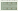
MK1 内部 +0m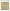
SH1 内部 +0m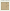
SH2 内部 +0m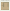
CP1 内部 +0m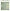
CP1 内部 +3m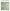
LB1 内部 +0m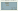
周期 A の居住街・商業区
周期 B の居住街・商業区
周期 C の居住街・商業区
周期 A：第1〜3層の旧・新図面
第1層
改修前 修正版
修正版
第2層
改修前 修正版
修正版
第3層
改修前 修正版
修正版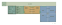
周期 B：第1〜3層の旧・新図面
第1層
改修前 修正版
修正版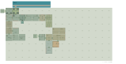
第2層
改修前 修正版
修正版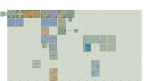
第3層
改修前 修正版
修正版
周期 C：第1〜3層の旧・新図面
第1層
改修前 修正版
修正版
第2層
改修前 修正版
修正版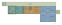
第3層
改修前 修正版
修正版
搬送範囲・方式の比較図
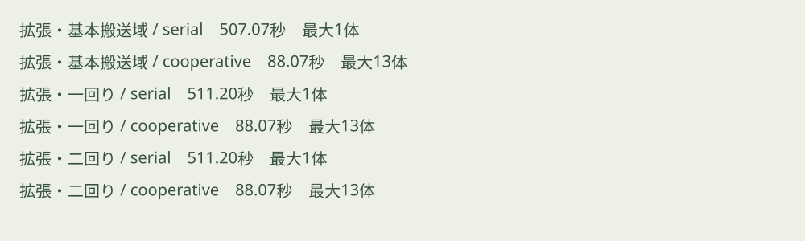
各周期の平面図
周期 A
第3層第2層第1層 第3層の通路成分グラフ 第2層の通路成分グラフ
第2層の通路成分グラフ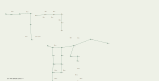
第1層の通路成分グラフ
周期 B
第3層第2層第1層 第3層の通路成分グラフ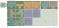
第2層の通路成分グラフ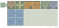
第1層の通路成分グラフ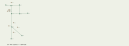
周期 C
第3層第2層第1層 第3層の通路成分グラフ 第2層の通路成分グラフ
第2層の通路成分グラフ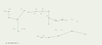
第1層の通路成分グラフ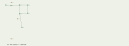
遠隔区域と泉の配置
周期 A

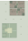
周期 B

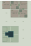
周期 C

各遷移の搬送経路・保管と一時退避
A→B
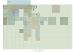
B→C
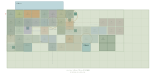
C→A